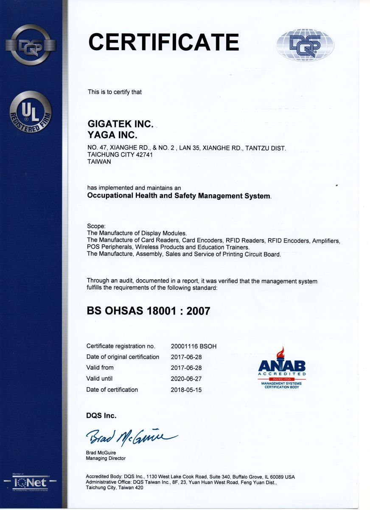

<script src="header.js"></script>

<main class="news-d">

<div class="inner">

	<div class="news-d-t">
		<div class="news-d-n">Taichung factory received OHSAS18001:2007 Occupational Health and Safety Management System certified</div>
		<div class="news-d-d">2017-06-28<span class="publisher"><i class="fas fa-pen-nib"></i>Chih-Chuan, Chen</span></div>


	</div>
	<div class="news-d-i">
		<p>
			GIGATEK’s Taichung Campus obtained the approval from DQS Taiwan Inc. for the Occupational Health and Safety Management System (OHSAS18001:2007) Certification. Through efforts from all the staff, we ensured that the processes and systems met the occupational health and safety management requirements. As the business continues to grow, we can fulfil our social, ethnic and legal responsibilities by understanding the risks related to occupational safety and health. We will focus on controlling the various hazards and risks imposed on our staff in our operational activities, products or services, place importance on the staff’s safety protection and health maintenance, continuously improve performance in terms of occupational safety and health, and promise to comply with the laws and regulations as well as other requirements.  
		</p>
		<p>
			<div class="title">About OHSAS18001:2007</div>
			  The purpose of the Occupational Health and Safety Management System (OHSAS18001) is to reduce and prevent accidental loss of life, property or time while minimizing damage to the environment through management. It provides the following set of risk management methods: Identify hazards that exist in the company's products, services, activities and work environment through the professional investigation and conformity assessment required by the relevant laws and regulations; develop appropriate control plans for unacceptable hazards and risks; implement the control plans as well as regularly review and evaluate the occupational health and safety regulations and plans; and establish a management system that includes elements such as organizational structure, responsibilities, training, communication, emergency preparedness and response, and continually improve occupational health and safety performance. 
			 <br><br>
			 For detailed information about OHSAS18001:2007, visit:&nbsp;&nbsp;<a href="http://18000store.com/ohsas-18000-requirements/ " target="_blank">http://18000store.com/ohsas-18000-requirements/ </a>
		</p>
		
		<a class="venobox" href="public/SRC/images/news/OHSAS18001.jpg"></a>
	</div>
	<a href="news.php" class="btn">Back</a>
</div>

</main>

<nav class="bread">

	<div class="inner">

		<a href="index.php">Home</a><span class="bread-space">/</span><a href="news.php">NEWS</a>

	</div>


</nav>

<script src="footer.js"></script>